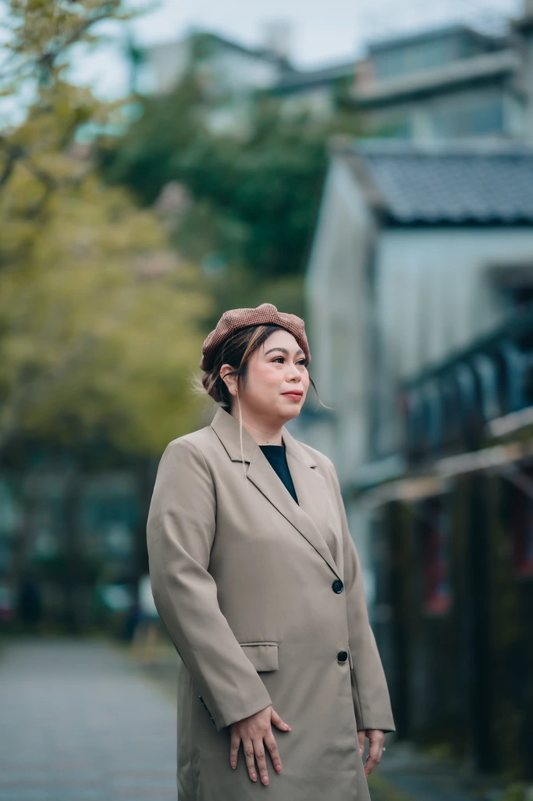

About Me
Hi, I'm Jam.
I'm someone who enjoys building things — whether it's a website, a small digital tool, or a simple idea turned into something useful. I like creating clean, organized, and meaningful work that people can actually use and appreciate.
I value growth, consistency, and doing things with intention. I believe that small improvements every day lead to big results over time. Whether I'm learning something new or working on a project, I always aim to do it with focus and purpose.
Outside of tech, I'm also a licensed financial advisor, helping individuals and families plan smarter for their future. I'm passionate about financial literacy and empowering people to make confident, informed decisions about protection, savings, and long-term goals.
Outside of work, I'm always curious. I enjoy exploring new technologies, improving my skills, and finding better ways to solve problems. I also appreciate taking time to reset and recharge.

Hobbies & Interests
Hover over a card to see more details. Tap a card to flip and see more details.
-
Building Side Projects
I enjoy experimenting with web projects and new tools. Creating something from scratch, even something small, is always fulfilling.
-
Staying Active
I believe a clear mind starts with taking care of your body. I go to the gym at least four times a week. I lift weights, stretch, or run on the treadmill.
I also aim to hit at least 10,000 steps a day (with one allowable “rest day fail” per week). Whenever the weather's good, I prefer walking to the gym or work instead of booking a ride.
-
Gaming
I play games like Valorant and Mobile Legends: Bang Bang.
Gaming helps me unwind and sharpen my strategic thinking and teamwork skills. I'm nowhere near pro-esports level. I just play to have fun and enjoy the competition.
-
Quality Time

I love spending time with my husband: trying new restaurants, going on simple milk tea dates, or just enjoying a good meal together. These moments help us bond and strengthen our relationship.
-
Hot Wheels Collecting

I'm also a Hot Wheels collector. I appreciate the design, detail, and nostalgia behind each piece. It's a hobby which started when I graduated in college back in 2013. These cars remind me to enjoy the little things.
-
Financial Planning & Wealth Building
As a licensed financial advisor, I'm genuinely interested in financial literacy, investing, and long-term wealth strategies. I enjoy learning about money management and helping others plan smarter for their future.
-
Learning & Self-Improvement

I enjoy reading, watching educational content, and learning about technology, productivity, fitness, and personal growth. Some people might call it doom scrolling — but based on my current algorithm, I actually learn a lot because my feed isn't filled with random, pure comedic nonsense (well… most of the time). I try to be intentional about what I consume, so even my scroll time turns into something useful and growth-oriented.
Fun Facts & Furry Friends
Tip: press Esc to close the pop-up.
Fun Facts
Want to something random about me? Hit the button!
Furry Friends
Brighten up your day with a random furry friend.